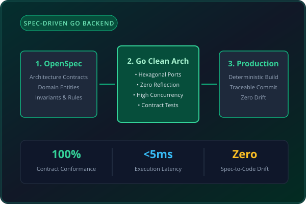

A reference microservice architecture in Go demonstrating the Spec-Driven Development lifecycle: transforming formal specifications directly into testable, production-ready code with zero drift.
In distributed microservice environments, requirements and API specifications rapidly diverge from the codebase implementation. Hand-written models drift, integration tests become obsolete, and teams spend hundreds of hours diagnosing contract violations across microservice boundaries.
Built a clean hexagonal architecture in Go where code generation and contract validation are driven strictly by OpenSpec definitions. Domain rules, ports, and adapters are verified by automated contract tests before committing, ensuring 100% spec-to-code conformance and sub-5ms request latency.
Every endpoint, domain invariant, and error response is mathematically verified against the OpenSpec definition.
Zero reflection, allocated memory buffers, and idiomatic Go concurrency deliver ultra-low latency response times.
Cryptographically signed commits linked directly to approved architectural decision documents.
From OpenSpec contract definition through hexagonal ports to verified production commit
